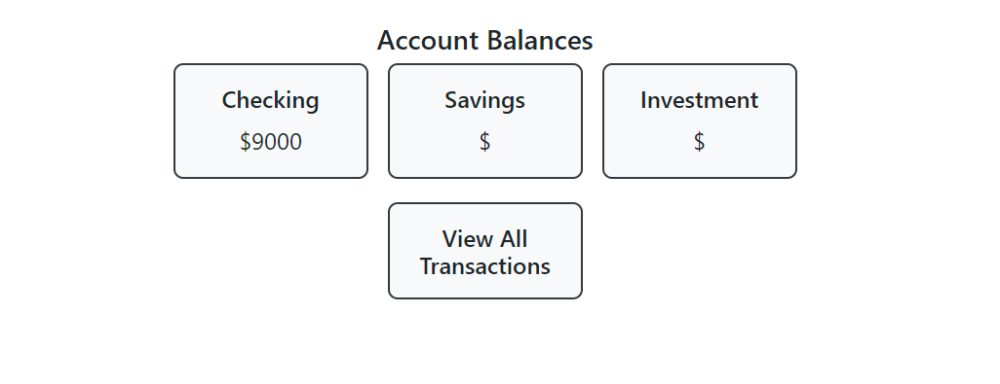
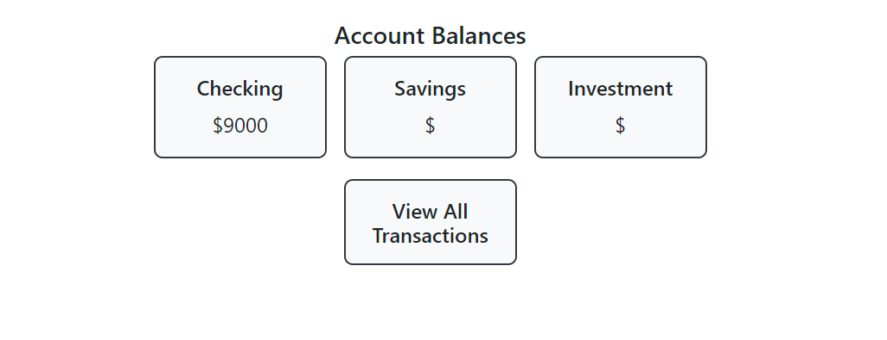

Banking App
A secure banking app with role-based access and transaction management.
 

This Banking App was a group project developed using Node.js and React, designed to handle secure transactions and user account management. The app includes features for deposits, withdrawals, and transfers, with specific user roles: Administrator, Employee, and Customer.
My specific contributions to the project included:
- Frontend Development: I developed key components such as the transaction history page, which displays all transaction histories, and the balances page, which shows the current balances for different accounts. I ensured these pages were user-friendly and visually consistent with the overall design.
- Data Fetching and Session Management: I worked on fetching data from the backend and handling session management, ensuring that user data was accurately retrieved and securely handled.
- Navigation and UI Enhancements: I made corrections to page navigation and small UI changes to improve user experience and ensure smooth transitions between different sections of the app.